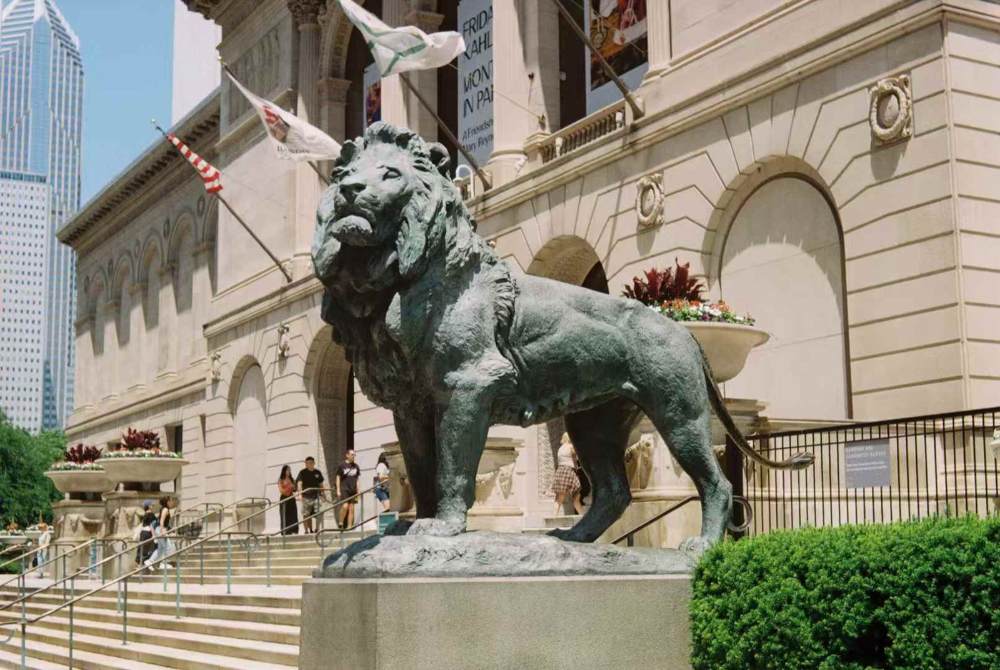
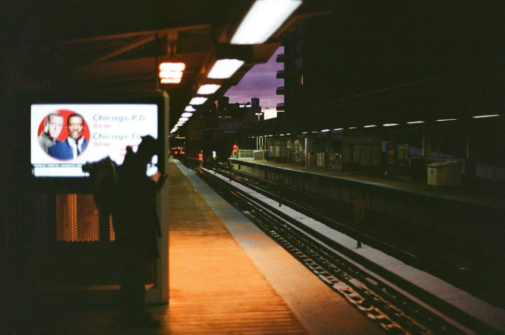
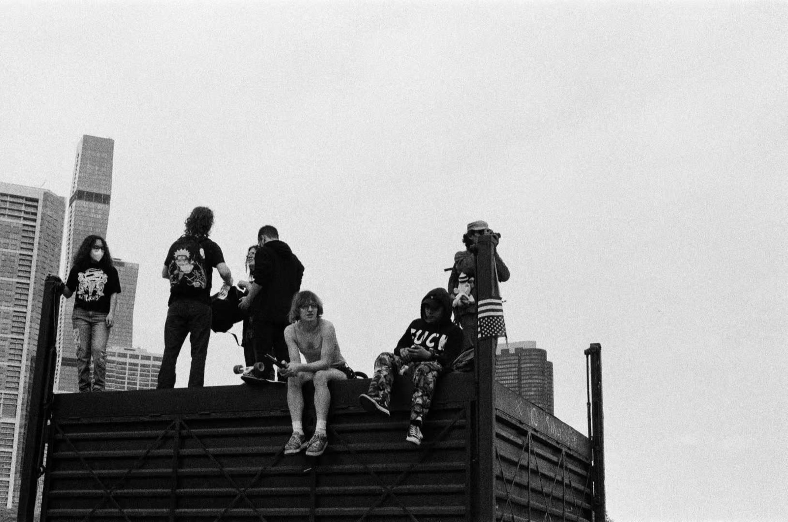
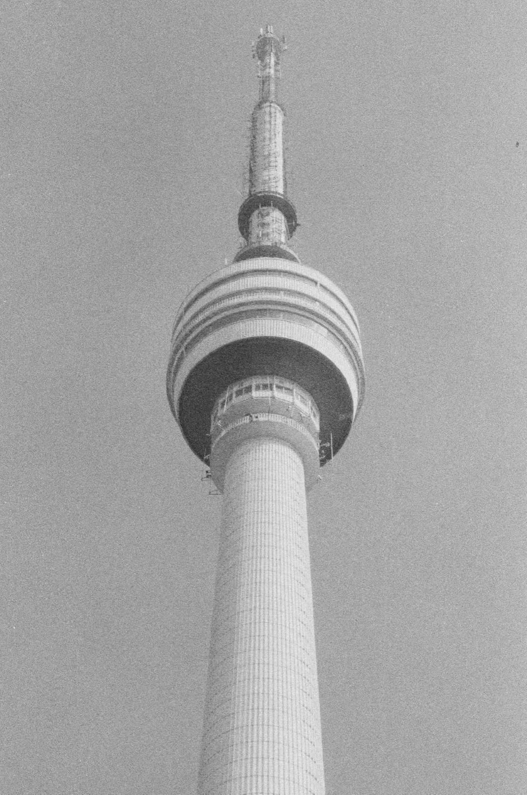
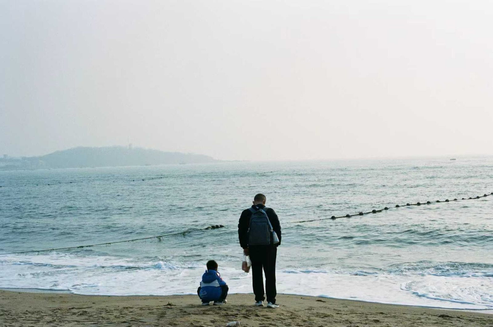
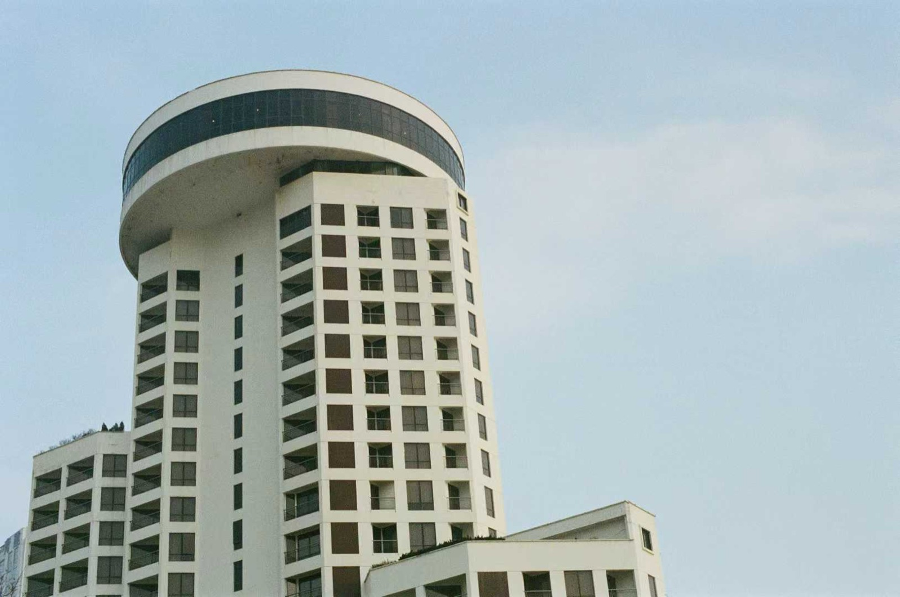
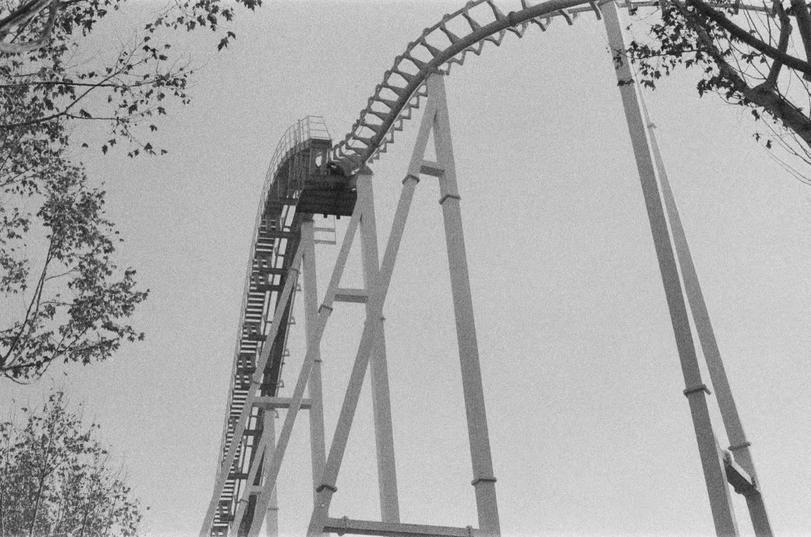
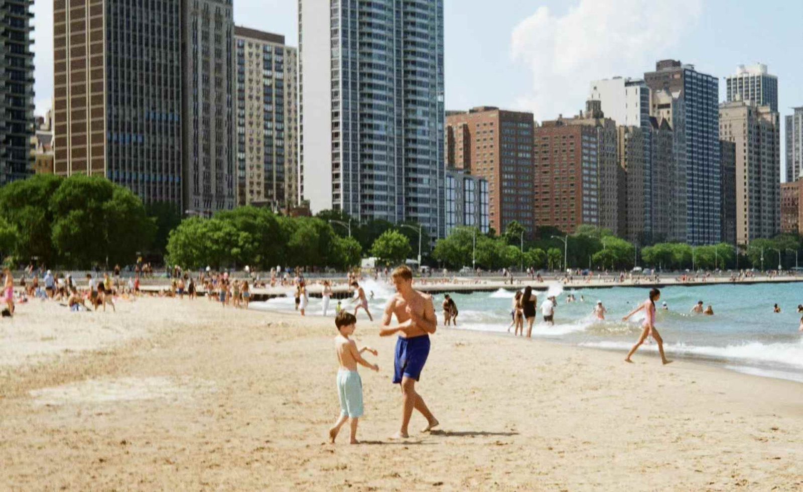

Carnegie Mellon University
Expected May 2028Master of Computational Data Science (MCDS)
School of Computer Science · Pittsburgh, PA
Hello, I'm
An AI software engineer who builds LLM benchmarks, document-understanding systems, and human-in-the-loop ML tools.
MCDS at Carnegie Mellon University
B.S. Computer Science & Economics, UIUC
I'm a graduate student in the Master of Computational Data Science program at Carnegie Mellon University. Before that I studied Computer Science and Economics at the University of Illinois Urbana-Champaign, graduating with a 3.96 GPA.
My work sits where machine learning meets real software: evaluating LLMs for agriculture at NCSA, building AI-assisted annotation workflows at Intel, and extracting structured data from financial documents. I like turning research models into tools people actually use.
Master of Computational Data Science (MCDS)
School of Computer Science · Pittsburgh, PA
B.S. in Computer Science & Economics
Cumulative GPA: 3.96 / 4.00
AI Software Engineer Graduate Intern
AI-assisted industrial defect annotation and evaluation framework using Intel Geti Active Learning.
AI Software Engineer Intern
A benchmark for evaluating LLMs on agricultural questions.
An LLM-driven framework for soil spectrum generation and property prediction.
AI Software Engineer Intern
Document understanding system for financial PDFs using multi-modal LLMs.
AI Software Engineer Intern
LLM-powered job recommendation system for resume–job matching.
When I'm away from the keyboard, I'm usually somewhere with a film camera.








I'm open to software engineering and ML roles. The fastest way to reach me is email.